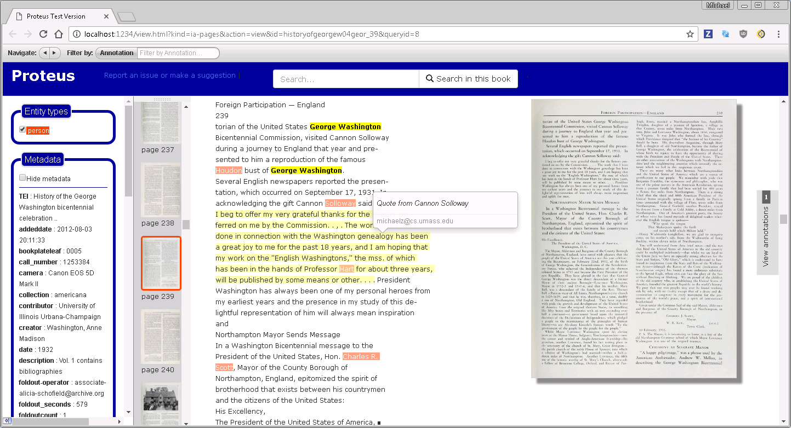
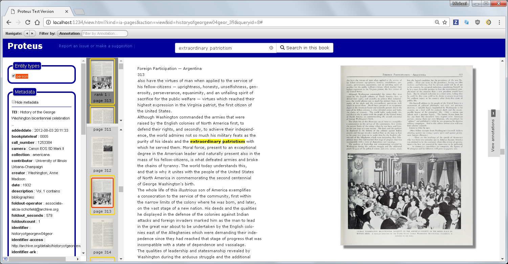
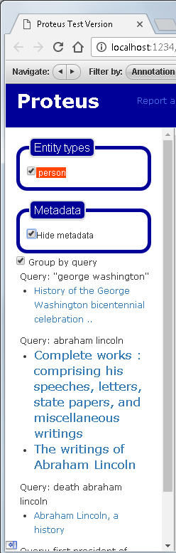
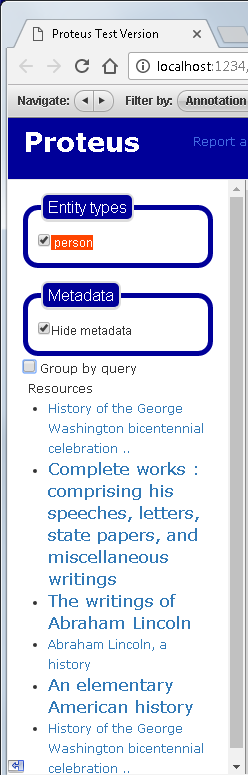

Regardless of how you search for a book on the main search page, you explore the book in the "OCR View" by clicking on the "View OCR" link in the search results.

This view has three columns: on the far left you can turn on/off the highlighting of entities and see the book's metadata. Next to that are thumbnails of the book's pages, then you can see the OCR text along with an image of the page.
In this view, you can view, add, edit, and delete notes for the pages. In the screenshot above, you can see highlighted text with the user note "Quote from Cannon Solloway".
To add a note, highlight some text with the mouse and select the first icon that pops up. When you hover over a note you created, you can edit or delete the note via the pencil or "x" icon (respectively) on the popup that displays the note text.
Note: You can only edit and delete notes that you created.
When you search within a book, the pages that match the query will show at the top of the thumbnail column.

If you scroll down on the far left column and/or hide the metadata, you will see queries that were used to find documents for all the labels in this instance of Proteus. The size of the document names is (somewhat) proportional to how many labels the document has.
 The image on the left shows the documents found by specific queries.
The image on the right, shows all the documents found.